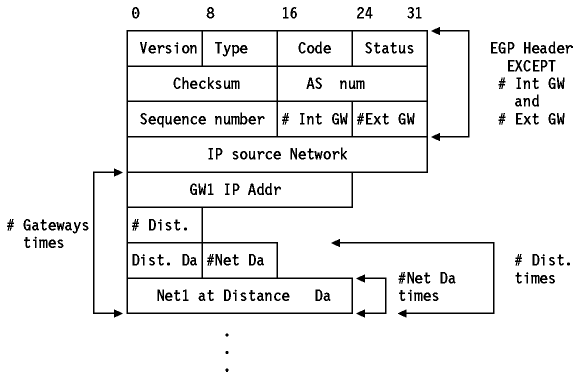
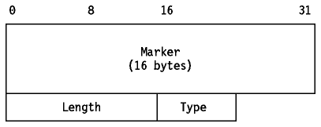
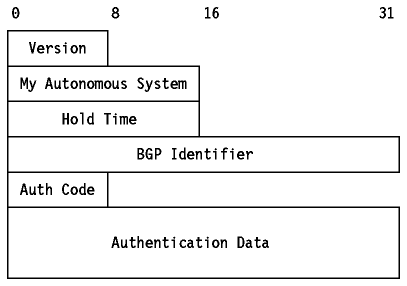
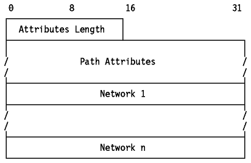
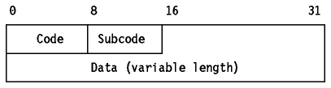

Table of Contents
Table of Contents  Co-existence
of TCP/IP and OSI Routing Protocols without IS-IS
Co-existence
of TCP/IP and OSI Routing Protocols without IS-ISTable of Contents Co-existence
of TCP/IP and OSI Routing Protocols without IS-IS
Exterior Routing Protocols or Exterior Gateway Protocols (EGPs) are used to exchange routing information between routers in different autonomous systems.
Note: The term Exterior Routing Protocol has no abbreviation in common use, so we shall use the abbreviation EGP as is usual in TCP/IP literature.
Two EGPs are in common use
EGP is a standard protocol. Its status is recommended.
The Exterior Gateway Protocol is the protocol used for exchange of routing information between exterior gateways (not belonging to the same autonomous system).
EGP gateways may only forward reachability information for networks within their autonomous system. This routing information must be collected by this EGP gateway, usually via an Interior Gateway Protocol (IGP), used to exchange information between gateways within an autonomous system (see Figure - The ARPANET Backbone).
EGP is based on periodic polling using Hello/I Hear You message exchanges, to monitor neighbor reachability and poll requests to solicit update responses. EGP restricts exterior gateways by allowing them to advertise only those destination networks reachable entirely within that gateway's autonomous system. Thus, an exterior gateway using EGP passes along information to its EGP neighbors but does not advertise reachability information about its EGP neighbors (gateways are neighbors if they exchange routing information) outside the autonomous system. It has three main features:
To perform these three basic functions, EGP defines 10 message types:
Let us consider the EGP routing update message shown in
Figure - EGP Routing Update Message.

Figure: EGP Routing Update Message
The different fields are as follows (the EGP header is not considered; refer to RFC 904 for more details):
As indicated above, the EGP routing information messages associate a distance qualifier to each route. But, EGP does not interpret these distance values. They merely serve as an indication of the reachability or unreachability of a network (a value of 255 means that the network is unreachable). The value cannot be used to compute the shorter of two routes unless those routes are both contained within a single autonomous system. For this reason, EGP cannot be used as a routing algorithm. As a result there will be only one path from the exterior gateway to any network.
EGP is gradually being replaced by the more functional Border Gateway Protocol (BGP). For a more detailed description of BGP refer to the next section.
Note: There are four different versions of BGP defined. Where BGP is specified without a version number, it normally refers to BGP Version 3 unless the document pre-dates the publication of the BGP-3 definition. BGP-3 is described in this section and BGP-4 in Border Gateway Protocol Version 4 (BGP-4). BGP-1 and BGP-2, described in RFC 1105 and RFC 1163, are obsolete. Changes from BGP-1 and BGP-2 to BGP-3 are documented in Appendix 2 and 3 of RFC 1267.
BGP-3 is a draft standard protocol. Its status is elective. It is described in RFC 1267.
BGP-3 is an inter-Autonomous System (inter-AS) routing protocol based on experience gained from EGP (see Exterior Gateway Protocol (EGP)). Unlike other routing protocols which communicate via packets or datagrams, BGP-3 is connection oriented; it uses TCP as a transport protocol. The well-known port number is 179. See Transmission Control Protocol (TCP) for information on TCP and port numbers.
Recall that the EGP was designed as a protocol to exchange reachability information between autonomous systems, rather than a true routing protocol. Because inter-AS routing information is not available, EGP cannot detect the presence of a loop caused by a set of EGP routers all believing that one of the others can reach another AS to which none of them is connected. A further problem with EGP has to do with the amount of information exchanged; as the number of IP networks known to the NSFNET increased, the size of the EGP Neighbor Reachability (NR) messages became quite large and the amount of time it took to process them became significant.
BGP-3 has replaced EGP in the NSFNET backbone for these reasons. However, BGP-3 as described in RFC 1268 does not require the NSFNET or any other backbone to play any central role. Compare this to the Core System role played by the ARPANET in the early days of the Internet. Instead, BGP-3 views the Internet as an arbitrary collection of autonomous systems, and it does not take account of the internal topology of an AS nor of the IGP (or possibly multiple IGPs) used within an AS.
Before giving an overview of BGP-3 operation, we shall define some terms used in BGP-3:
Note: The nomenclature for this type of router is somewhat varied. RFC 1583, which describes OSPF, uses the term AS Boundary Router. RFC 1267 and 1268, which describe BGP-3, use the terms Border Router and Border Gateway. RFC 1340, which describes the interaction between OSPF and BGP-3, uses the term AS Border Router. We shall use the last term consistently when describing both OSPF and BGP. BGP-3 defines two types of AS Border Router, depending on its topological relationship to the BGP speaker which refers to it.
The IP address of a border router is specified as a next hop destination when BGP-3 advertises an AS path (see below) to one of its external neighbors. Next hop border routers must share a physical connection (see below) with both the sending and receiving BGP speakers. If a BGP speaker advertises an external border router as a next hop, that router must have been learned of from one of that BGP speaker's peers.Note: The term BGP connection can be used to refer to a session between two BGP speakers in the same AS.
It can be seen from the definitions above that a stub AS or a multihomed AS has the same topological properties as an AS in the ARPANET architecture: that is it never acts as an intermediate AS in an inter-AS route. In the ARPANET architecture, EGP was sufficient for such an AS to exchange reachability information with its neighbors, and this remains true with BGP-3. Therefore, a stub AS or a multihomed AS may continue to use EGP (or any other suitable protocol) to operate with a transit AS. However, RFC 1268 recommends that BGP-3 is used instead of EGP for these types of AS because it provides an advantage in bandwidth and performance. Additionally, in a multihomed AS, BGP-3 is more likely to provide an optimum inter-AS route than EGP, since EGP only addresses reachability and not ``distance''.
Each BGP speaker must evaluate different paths to a destination from the border router(s) for an AS connection, select the best one that complies with the routing policies in force and then advertise that route to all of its BGP neighbors at that AS connection.
BGP-3 is a vector-distance protocol but, unlike traditional vector-distance protocols such as RIP where there is a single metric, BGP-3 determines a preference order by applying a function mapping each path to a preference value and selects the path with the highest value. The function applied is generated by the BGP-3 implementation according to configuration information.
Where there are multiple viable paths to a destination, BGP-3 maintains all of them but only advertises the one with the highest preference value. This approach allows a quick change to an alternate path should the primary path fail.
RFC 1268 includes a recommended set of policies for all implementations:
BGP-3 requires that a transit AS present the same view to every AS using its services. If the AS has multiple BGP speakers, they must agree on two aspects of topology: intra-AS and inter-AS. Since BGP-3 does not deal with intra-AS routing at all, a consistent view of intra-AS topology must be provided by the interior routing protocol(s) employed in the AS. Naturally, a protocol such as OSPF (see Open Shortest Path First Protocol (OSPF) Version 2) or Integrated IS-IS (see OSI Intermediate System to Intermediate System (IS-IS)) which implements synchronization of router databases lends itself well to this role. Consistency of the external topology may be provided by all BGP speakers in the AS having BGP sessions with each other, but BGP-3 does not require that this method be used, only that consistency be maintained.
BGP-3 only advertises routes that it uses itself to its neighbors. That is, BGP-3 conforms to the normal Internet hop-by-hop paradigm, even though it has additional information in the form of AS paths and theoretically could be capable of informing a neighbor of a route it would not use itself.
When two BGP speakers form a BGP session, they begin by exchanging their entire routing tables. Routing information is exchanged via UPDATE messages (see below for the format of these messages). Since the routing information contains the complete AS path to each listed destination in the form of a list of AS numbers in addition to the usual reachability and next hop information used in traditional vector distance protocols, it can be used to suppress routing loops and to eliminate the counting-to-infinity problem found in RIP. After BGP neighbors have performed their initial exchange of their complete routing databases, they only exchange updates to that information.
All BGP-3 messages have a common basic format. They vary between 19 and 4096
bytes in length, are transmitted over TCP and are processed in their entirety
(that is, a BGP speaker does not begin to process the message until it has
received the whole message). Each message has a header shown in
Figure - BGP-3 Header.

Figure: BGP-3 Header
OPEN messages are used to initiate the BGP-3 session. The format of an OPEN
message is shown in Figure - BGP-3 OPEN
Message.

Figure: BGP-3 OPEN Message
UPDATE messages are used to transfer routing information. The format of an
UPDATE message is shown in Figure - BGP-3
UPDATE Message.

Figure: BGP-3 UPDATE Message
Optional attributes are those that BGP-3 implementations are not required to recognize. If a receiving BGP speaker does not recognize the attribute, it should handle it according to the transitive bit. BGP speakers are allowed to make appropriate updates to attributes in messages which they receive from peers before relaying them to other BGP speakers.
The attribute type codes defined are shown in
Table - BGP-3 UPDATE Path Attribute Type
Values.

Table: BGP-3 UPDATE Path Attribute Type Values
NOTIFICATION messages are used to inform the neighbor of an error. The BGP
connection is terminated after the message is sent. The format of a
NOTIFICATION message is shown in
Figure - BGP-3 NOTIFICATION Message.

Figure: BGP-3 NOTIFICATION Message
KEEPALIVE messages are used to ensure that the connection is still working. The KEEPALIVE message consists of just the header.
A detailed description of BGP-3 may be found in the following RFCs:
There is a proposed standard protocol with a status of elective defining how BGP-3 (an exterior routing protocol) should interact with OSPF (an interior routing protocol). Any host or router which dynamically exchanges information between BGP-3 and OSPF should adhere to this standard. It is described in RFC 1654 - BGP OSPF Interaction.
BGP OSPF interaction covers the conversion from OSPF fields in an External
Links Advertisement to BGP path attributes, and vice versa, for three
properties of a route definition.

Table: BGP OSPF Attribute-Field Mapping
The standard defines how these mappings should be done and what restrictions there are on what may be done automatically. Please refer to the RFC for more information.
BGP-4 is a proposed standard protocol. Its status is elective. It is described in RFC 1654. The main changes are to support supernetting or Classless Inter-Domain Routing (CIDR) which is described in Classless Inter-Domain Routing (CIDR). In particular BGP-4 supports IP prefixes and path aggregation. Because CIDR is radically different from the normal Internet routing architecture, BGP-4 is incompatible with BGP-3. However, BGP does define a mechanism for two BGP speakers to negotiate a version which they both understand. This is done using the OPEN message. Therefore, it is possible to implement ``multi-lingual'' BGP speakers which will allow inter-operation of BGP-3 and BGP-4.
The following items identify the major changes between BGP-3 and BGP-4.
A new attribute for an AS path (ATOMIC_AGGREGATE) can be used to insure that certain aggregates are not de-aggregated. Another new attribute (AGGREGATOR) can be added to aggregate routes in order to advertise which AS and which BGP speaker within that AS caused the aggregation.

A detailed description of BGP-4 can be found in the following RFCs:
The routed program which supports RIP is implemented on the following IBM TCP/IP platforms:
The routed program is not implemented on OS/400.The gated program which supports RIP, Hello, EGP and BGP is implemented on AIX. On AIX 4.1, gated additionally supports OSPF Version 2 and RIP Version 2.
The IBM 6611 Network Processor implements RIP, RIP Version 2, Hello, OSPF, EGP and BGP.
The IBM 2210 Nways Network Processor implements RIP, OSPF and EGP.
 Application
Protocols
Application
Protocols